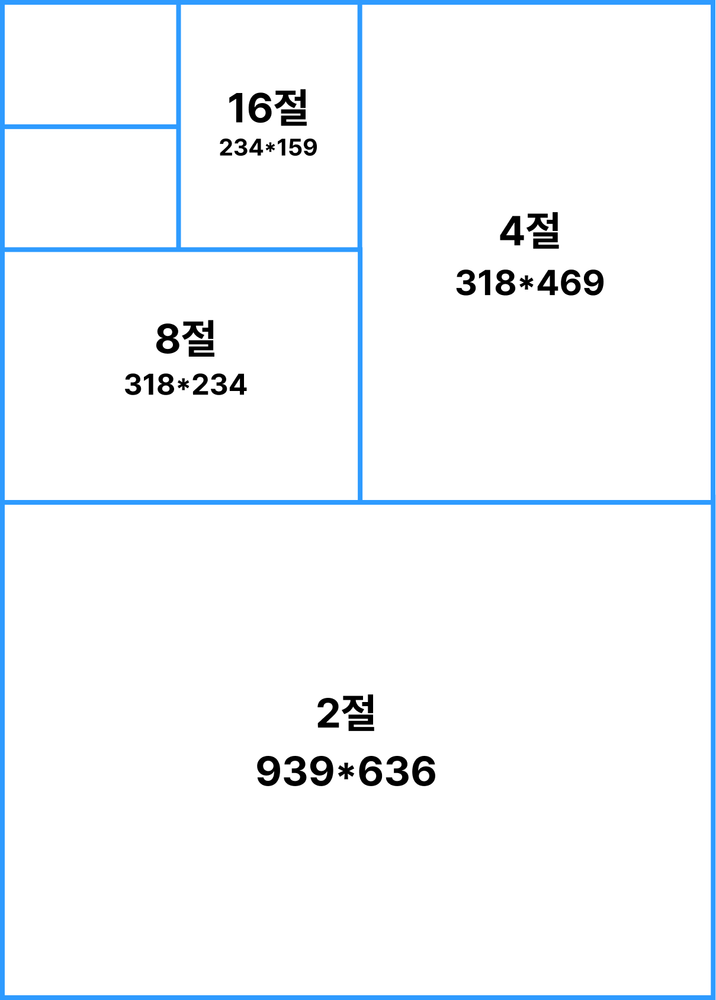

알고있으면 인쇄비를 절약할 수 있는
인쇄종류에 대해 알아볼까요?
디자이너를 위한 필수 인쇄 팁
디자이너를 위한 필수 정보
한번에 모아보자! 인쇄의 A부터 Z
Essential Printing Tips for Designers
Designer Essentials
All in one place! The A to Z of printing
Wichtige Drucktipps für Designer
Designer-Essentials
Alles an einem Ort! Das A bis Z des Druckens
디자이너를 위한 필수 인쇄 팁
디자이너를 위한 필수 정보
한번에 모아보자! 인쇄의 A부터 Z
Essential Printing Tips for Designers
Designer Essentials
All in one place! The A to Z of printing
Wichtige Drucktipps für Designer
Designer-Essentials
Alles an einem Ort! Das A bis Z des Druckens
인쇄 퀄리티를 높이기 위한 팁
인쇄에 어려움을 겪는 모든 분들을 위하여
Tips to improve your printing quality
For everyone who has trouble printing
Tipps zur Verbesserung Ihrer Druckqualität
Für alle, die Probleme beim Drucken haben
인쇄 퀄리티를 높이기 위한 팁
인쇄에 어려움을 겪는 모든 분들을 위하여
Tips to improve your printing quality
For everyone who has trouble printing
Tipps zur Verbesserung Ihrer Druckqualität
Für alle, die Probleme beim Drucken haben
essential
for print
HOW
TO PRINT
PRINT GUIDE
복잡하고 어려운 단어에 머리아파 본적있다면?
인쇄소가서 진땀 빼본적있다면?
초보 디자이너를 위한 인쇄 가이드
인쇄소 가기 전에 보고 가세요!

1도 인쇄 (Single Tone Printing)
흑백 인쇄 또는 c,m,y,k에서 한 가지 색만 사용한 인쇄(단도인쇄).
흑백 인쇄 또는 c,m,y,k에서 한 가지 색만 사용한 인쇄(단도인쇄).
2도 인쇄
두 가지 색을 사용한 인쇄. 주로 검정(흑백)을 기본으로 한 가지 색을 추가하여 인쇄.
2가지 색만 나오는 것은 아니다. 2도 색상과 검정을 혼합해서 비교적 다양한 색상을 만들 수 있다.
두 가지 색을 사용한 인쇄. 주로 검정(흑백)을 기본으로 한 가지 색을 추가하여 인쇄.
2가지 색만 나오는 것은 아니다. 2도 색상과 검정을 혼합해서 비교적 다양한 색상을 만들 수 있다.
4도 인쇄
c,m,y,k 4가지 색을 사용한 풀컬러 인쇄.
4가지 색을 조합하여 대부분의 색을 표현할 수 있다.
c,m,y,k 4가지 색을 사용한 풀컬러 인쇄.
4가지 색을 조합하여 대부분의 색을 표현할 수 있다.
별색 인쇄
c,m,y,k 네 가지 색 이외의 별도의 색을 만들어 인쇄.
다음 세가지 경우에서 인쇄
1. cmyk로 표현이 어려운 경우
2. 금색, 은색, 형광색, 파스텔 등 특수한 색을 표현해야하는 경우
3. CI나 BI등 색상이 절대적으로 일치해야하는 경우
c,m,y,k 네 가지 색 이외의 별도의 색을 만들어 인쇄.
다음 세가지 경우에서 인쇄
1. cmyk로 표현이 어려운 경우
2. 금색, 은색, 형광색, 파스텔 등 특수한 색을 표현해야하는 경우
3. CI나 BI등 색상이 절대적으로 일치해야하는 경우
What is Risograph?
리소 인쇄(Risograph)는 하나의 문서를 여러 장 찍어 낼 수 있게 개발된 공판 인쇄 기법 입니다. 공판이 되는 막을 마스터(원지)라 하며, 마스터에 미세한 구멍을 뚫어 이미지를 표현합니다. 그리고 구멍 사이로 잉크를 내보내어 용지에 이미지를 인쇄합니다.

| 특징 |
1. 한 번에 한 가지 또는 두 가지 색상의 인쇄가 가능해요.
인쇄 과정을 반복(오버프린트)하면 색상 수에 제한 없이 결과물을 만들어 낼 수 있어요.
2. 원료의 특성상 건조가 느려요.
3. 코팅이 된 종이에는 인쇄가 불가능해요.
4. 인쇄 정합에 오차가 있어 완성된 장마다 그 결과에 차이가 있을 수 있어요.
5. 별색 잉크 자체의 밝고 선명한 색감과 독특한 질감을 표현 가능해요.
6. 형광 핑크, 형광 옐로우, 반짝이는 금색, 백색 등의 별색을 소량 인쇄 가능해요.
| 표현 |
하나의 색상을 사용한 인쇄부터 여러가지 색상을 혼합한 인쇄까지 할 수 있어요.
사용하는 색상의 갯수에 따라 만들어야하는 파일의 수도 달라집니다.


| 오버프린트 |
| 녹아웃 |
이미지가 겹쳐진 부분을 그대로 겹쳐 인쇄하는 방법.
이미지가 겹쳐진 부분에서 어느 한쪽을 비우는 방법.
인쇄 오차에 의해 종이의 흰 부분이 보일 수도 있어요.

| 파일 |
색상별로 분리한 흑백 파일을 준비해야해요.
파일에 포함된 레스터 이미지는 그레이스케일 모드로 변환해야 하며,
해상도는 300-600dpi를 권장합니다.
| 분판 |
컬러를 흑백으로 변환할 때, 명도에 따른 회색도 값을 주의해야해요.
예를 들어 보라색 레이어의 흑백 파일을 만들 때는
가장 진한 보라 부분이 가장 진한 블랙으로 되어 있어야 해요!
원하는디자인
보라 분판
인쇄를 한 뒤 후가공 작업을 통해 작업물의 퀄리티를 높일 수 있어요!
박
인쇄물에 빛나는 글자나 로고를 표현하기 위해 사용되는 후가공

형압
글자, 로고 또는 특정 디자인에 압력을 가하여 돌출시키거나 들어가게 하는 후가공
코팅(라미네이팅)
얇은 비닐 필름을 인쇄면에 붙이는 후가공
무광 / 유광 / uv / 홀로그램

접지
사각 인쇄물을 수직이나 수평으로
접어주는 가공

오시
글자, 로고 또는 특정 디자인에 압력을 가하여 돌출시키거나 들어가게 하는 후가공

타공
종이에 원형의 구멍을 뚫는 후가공
고리나 끈을 꿰어 걸거나 묶을 수 있음

미싱
점선 커팅을 하여 해당 부분을 뜯어 분리하기 쉽게 만드는 가공
귀도리(라운딩)
재단 후 각진 인쇄용지의 모서리를 둥글게 가공하는 후가공
how to print how to print how to print how to print how to print how to print how to print how to print how to print how to print how to print how to print how to print how to print how to print how to print how to print how to print how to print how to print how to print how to print how to print how to print how to print how to print how to print how to print how to print how to print how to print how to print how to print how to print how to print how to print how to print how to print how to print how to print how to print how to print how to print how to print how to print how to print how to print how to print how to print how to print how to print how to print
how to print how to print how to print how to print how to print how to print how to print how to print how to print how to print how to print how to print how to print how to print how to print how to print how to print how to print how to print how to print how to print how to print how to print how to print how to print how to print how to print how to print how to print how to print how to print how to print how to print how to print how to print how to print how to print how to print how to print how to print how to print how to print how to print how to print how to print how to print how to print how to print

how to print how to print how to print how to print how to print how to print how to print how to print how to print how to print how to print how to print how to print how to print how to print how to print how to print how to print how to print how to print how to print how to print how to print how to print how to print how to print how to print how to print how to print how to print how to print how to print how to print how to print how to print how to print how to print how to print how to print how to print how to print how to print how to print how to print how to print how to print how to print how to print how to print how to print how to print how to print
how to print how to print how to print how to print how to print how to print how to print how to print how to print how to print how to print how to print how to print how to print how to print how to print how to print how to print how to print how to print how to print how to print how to print how to print how to print how to print how to print how to print how to print how to print how to print how to print how to print how to print how to print how to print how to print how to print how to print how to print how to print how to print how to print how to print how to print how to print how to print how to print
종이 규격과 판형
어떤 종이 사이즈를 선택하느냐에 따라 인쇄물의 분위기가 달라지기 때문에 내 디자인에 맞는 종이 사이즈를 고르는게 정말 중요해요. 인쇄의 기본인 종이사이즈에 대해 알아볼까요?
A 시리즈(A계열 종이)
B 시리즈(B계열 종이)
국제적으로 통용되는 종이 규격으로 한국에서도 이 기준을 따르고 있어요. 우리가 일반적으로 가장 많이 사용하는 종이 대부분이 a계열 종이로 이루어져있어요.
에도시대에 관용지로 사용되었던 미농지의 크기에서 유래되었어요. 우리가 4절지라고 부르는 것이 미농 전지를 4등분한 것을을 의미해요.
우리나라에서 통용되는 종이 규격은 몇가지 더 있어요.가장 일반적으로 사용되는 규격으로는 국전지와 46전지가 있어요.
국전지(636*939)
46전지(788*1091)
a1(841x594)의 경우 국전지(939X636)에 맞는 편이고 b1의 경우 46전지에 들어갈 수 있어요. 그렇다고 모든 a시리즈가 국전지에, b시리즈가 46전지에 맞는 건 아니에요.
국판형을 국전지에, 46판형을 46전지에 인쇄하면 종이 손실률이 낮아져요.
국내에서 가장 많이 사용되는 판형을 알아볼까요?
판형 사이즈별로 많이 쓰이는 제작 용도를 알려줄게요.
판형
사이즈
종이
제작 용도
국배판
227*304
국전지
자료집 / 보고서 / 논문집
신국판
152*225
국전지
자서전 / 수필 / 시집
국판
152*218
국전지
수필 / 소설
국반판
109*152
국전지
수필 / 소설
타블로이드판
374*254
46전지
문제집 / 전문서적 / 교재
46배판
188*254
46전지
주간지 / 잡지 / 문제집
크라운판
176*248
46전지
자서전 / 사진집
46판
127*188
46전지
수필 / 시집
사이즈를 알았다면 어떤 종이에 인쇄할지도 정해야겠죠?
종이 분류
출판용으로 사용하는 대표적인 종이 분류입니다!
이외의 지종은 단가가 높아서 실무에서 자주 쓰이지는 않아요.
용도 Uses
분류 Type
종이 Paper
내지용 Inside Pages
일반지
아트 / 스노우화이트 / 모조 / 미색모조 / 뉴플러스 / 이라이트
고급지
랑데뷰 / 아이리스 / 문켄 / 아르떼 / 반누보 / 마쉬멜로우 / 몽블랑 / 앙상블 / 빌리지
표지용 Cover
일반지
아트 / 스노우화이트 / 모조
고급지
랑데뷰 / 아이리스 / 문켄 / 아르떼 / 반누보 / 마쉬멜로우 / 몽블랑 / 앙상블 / 빌리지
특수지
레자크 / 화일지 / 크래프트 / 뉴크래프트보드
펄지
스타라이트 / 스타드림 / 오로
how to print how to print how to print how to print how to print how to print how to print how to print how to print how to print how to print how to print how to print how to print how to print how to print how to print how to print how to print how to print how to print how to print how to print how to print how to print how to print how to print how to print how to print how to print how to print how to print how to print how to print how to print how to print how to print how to print how to print how to print how to print how to print how to print how to print how to print how to print how to print how to print how to print how to print how to print how to print
how to print how to print how to print how to print how to print how to print how to print how to print how to print how to print how to print how to print how to print how to print how to print how to print how to print how to print how to print how to print how to print how to print how to print how to print how to print how to print how to print how to print how to print how to print how to print how to print how to print how to print how to print how to print how to print how to print how to print how to print how to print how to print how to print how to print how to print how to print how to print how to print
재단 사이즈 & 작업 사이즈
작업물을 재단할 때 오차가 생겨 디자인이 잘릴 수도 있으니 작업 사이즈는 재단선 바깥까지 나가야해요! 약 3mm정도 안전하게 영역을 넓혀주세요.
블랙 인쇄
CMYK 블랙 인쇄를 했을 시 블랙이 밝고 흐릿하게 나온다면 리치 블랙을 사용해보세요. 4색의 비중을 달리 해도 되지만 웬만하면 cmyk의 값이 240을 넘지 않도록 해서 상황에 맞게 조정해보세요!
CMYK 비중
풀컬러 인쇄의 경우 CMYK 총 4가지의 잉크를 조합하는 만큼 색상의 도수가 많이 섞이지 않는 게 더 예쁘고 균일하게 나와요. 도수가 많아질수록 일정한 결과물을 내기 어렵기 때문에 특히 추후에 재인쇄할 일이 있다면 더 주의해야해요!
how to print how to print how to print how to print how to print how to print how to print how to print how to print how to print how to print how to print how to print how to print how to print how to print how to print how to print how to print how to print how to print how to print how to print how to print how to print how to print how to print how to print how to print how to print how to print how to print how to print how to print how to print how to print how to print how to print how to print how to print how to print how to print how to print how to print how to print how to print how to print how to print how to print how to print how to print how to print
how to print how to print how to print how to print how to print how to print how to print how to print how to print how to print how to print how to print how to print how to print how to print how to print how to print how to print how to print how to print how to print how to print how to print how to print how to print how to print how to print how to print how to print how to print how to print how to print how to print how to print how to print how to print how to print how to print how to print how to print how to print how to print how to print how to print how to print how to print how to print how to print